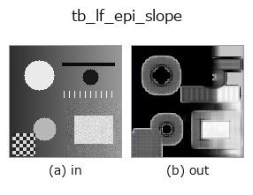

typed op• 資料種類:lightfield → image
• 呼叫:fullseye.apply(img, "tb_lf_epi_slope", a=0.5, b=0.5)(2-D 的模型是一張圖 + 兩個純量旋鈕 a,b∈[0,1])

*圖為在 128×128 合成輸入上實際執行的輸出。左為輸入，右為輸出。點雲以俯視散點顯示(亮度 = z)，一維序列為折線，體資料為沿 z 的最大值投影，影片為中間影格，複數影像為振幅；無法成像的回傳值直接顯示數值。*
*旋鈕 a 不改變輸出(實測: 0.1 / 0.5 / 0.9 相同)。*
*旋鈕 b 不改變輸出(實測: 0.1 / 0.5 / 0.9 相同)。*
階段(前置運算子 → 本運算子，由左至右):
▸ tb_lf_epi_slope: stages (docs site)
換別的影像(合成場景 / 照片 / 硬幣。上排為輸入，下排為對應輸出。旋鈕取預設):
▸ tb_lf_epi_slope: other inputs (docs site)
依極平面影像（EPI）直線方向得到的逐像素斜率（結構張量，單次計算）。
> 以下的詳細說明為原文 —— 摘要與標題已翻譯。
A scene point traces a straight line in the epipolar-plane image
(:func:lf_epi), so along that line the intensity is constant:
`E_u + s * E_x = 0`. Accumulating that constraint over the whole angular
grid and a `window x window` spatial neighbourhood gives the closed-form
least-squares slope `s = -(J_ux + J_vy) / (J_xx + J_yy)` with
`J_ab = sum(E_a * E_b)` — one pass over the light field, no sweep, both
the horizontal and vertical EPI directions pooled.
This estimator is biased, and the bias is the reason to also run
:func:lf_depth_from_focus. It is ordinary (not total) least squares on
finite differences, so it needs the EPI line to advance less than roughly
one texture correlation length per view. Measured 2026-09-01 on
5x5x64x64 synthetic fields, median over the interior: with texture
`sigma = 1.5 px, true +1.00 -> +1.0004, +0.50 -> +0.5285`,
`+1.50 -> +1.3018, +2.00 -> +1.4614; with sigma = 5.0` px the same
slopes give `+1.0003, +0.5029, +1.4827, +1.9482`. Integer
slopes on a wrapped field come back within 4e-4 and `s = 0` is exact;
`|s| > 1 is under-estimated, by 27% at s = 2` on the roughest texture.
Use it as a fast dense initialiser, not as the final word.
Returns `(slope_map, energy): the (H, W) slope map and the (H, W)`
gradient energy `J_xx + J_yy` that was the denominator. Pixels whose
energy is below *min_energy* have no measurable parallax (a flat patch
of sky); their slope is set to 0 and their energy reported as-is, so you
threshold on `energy` instead of being handed a plausible-looking number
divided by ~0.
Raises `ValueError`: *lf* not a valid light field, an angular/spatial
shape where *neither* EPI direction carries information (the horizontal EPI
needs `U >= 2 **and** W >= 2, the vertical needs V >= 2` and
`H >= 2`), an even or non-positive *window*, a non-positive *min_energy*.
Typed bridge of the lightfield op `lf_epi_slope into the 2-D evolution registry: the same implementation, called under the op(v, a, b) convention. This op has no tunable parameter; a and b` are unused.
• 範例資料目錄(下載 URL / 授權) —— 2-D 用 skimage.data(BSD/公有領域)加合成圖,3-D 給出真實資料源(Stanford/PDS 等)的下載 URL。
• 運算子來歷與參考文獻 —— 該運算子族所依據的研究/方法出處。
下面的程式已確認可以執行(與圖相同的輸入)。在 Studio 說明中，此區塊會變成按鈕，可當場載入並執行。
img_to_lightfield 0.50 0.50 tb_lf_epi_slope 0.50 0.50
▸ Load this pipeline · Load & run
下面的範例呼叫的是底層帳本運算子 lf_epi_slope。此橋接運算子只是把同一實作適配為 fn(v, a, b) 慣例，行為完全相同(只是呼叫形式不同)。
• lightfield_depth — py -3.11 examples/lightfield_depth.py
• poc_lightfield_depth — py -3.11 examples/poc_lightfield_depth.py
image 作為輸入)identity · gaussian · mean_box · bilateral · unsharp · median · min_filter · max_filter
typed)tb_points_to_voxel · tb_estimate_point_normals · tb_iss_keypoints · tb_angle_3points · tb_project_points · tb_render_point_depth · tb_statistical_outlier_removal · tb_radius_outlier_removal
*Provenance: ops.py — 2D 運算子登記表。本條目由 tools/opdocs.py md 自動產生(請勿手動編輯)。*
© 2026 Kazufumi Furuse — Fullseye operator documentation. Licensed under Apache-2.0.
{kind=link}
{kind=link}